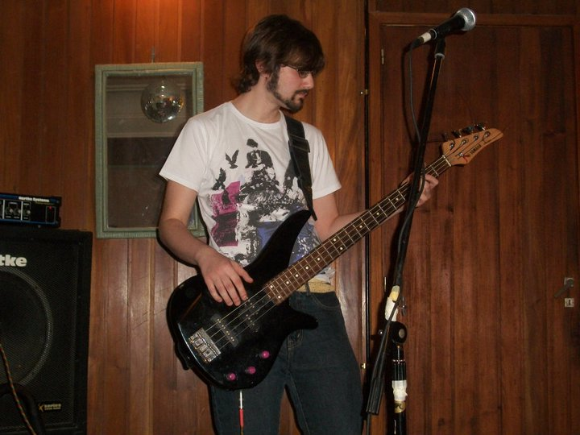

About me
Hello, my name is Nicolas Peluso. I am 33 years old and I came from Argentina, the country of
Tango, which I do not listen to that much, Football Soccer, the best sport in the world that is actually played with the foot
and “Asado”, which is an Argentinian barbecue I am really missing right now, as well as a proper “Dulce de leche”,
which is the Argentinian Nutella.
When I was in my country, I got a bachelor’s degree in Advertising in June 30 th 2016 from UNLZ , and I have been working in that field
since then, specially in the creative area. So that is what I enjoy the most in a job, the opportunity to do creative things.
I enjoy copywriting as well as designing.
My other great passion in life besides River Plate, a Soccer team from Argentina, is music.
I play the guitar and bass; I also would like to learn to play the piano.
I enjoy writing my own songs and producing my own music.
My motivational quote
The show must go on
The show must go on, yeah
Inside my heart is breaking
My makeup may be flaking
But my smile, still, stays on
Queen,The show must go on, Innuendo, 1991
My hobbies
- Music
- Football Soccer
- Playing Soccer video games
- Marvel & DC movies and series
- Listening to geek podcasts